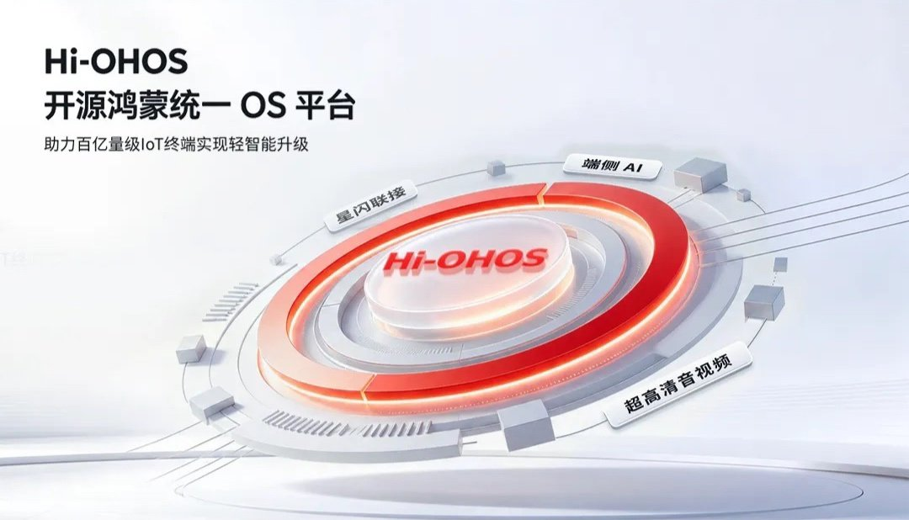

新闻 · 2026-11-28 18:00
将星闪联接、端侧 AI、超高清音视频融入开源鸿蒙，上海海思介绍 Hi-OHOS 平台
2026年11月28日，上海海思在南京举办的开源鸿蒙技术大会上介绍其基于开源鸿蒙构建的Hi-OHOS平台，该平台融合星闪联接、端侧AI与超高清音视频能力，面向智慧家庭、消费电子、汽车电子三大场景，助力百亿IoT终端实现轻智能升级。平台通过软硬协同实现设备互联互通，系统级框架支持AI推理与音视频处理。

来源与核验
单一信源报道，未交叉核实
2026年11月28日，上海海思在南京举办的开源鸿蒙技术大会上介绍其基于开源鸿蒙构建的Hi-OHOS平台，该平台融合星闪联接、端侧AI与超高清音视频能力，面向智慧家庭、消费电子、汽车电子三大场景，助力百亿IoT终端实现轻智能升级。平台通过软硬协同实现设备互联互通，系统级框架支持AI推理与音视频处理。

单一信源报道，未交叉核实